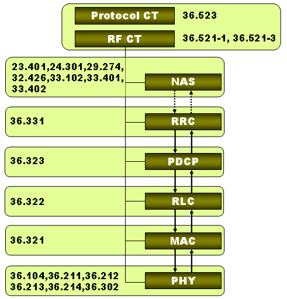

|
Tips for 3GPP Specfication Home : www.sharetechnote.com |
|
If you have something about which you have no idea of what they are talking about, you would ask somebody else for explanation.. and usually what you think is expert would give you very brief explanation which would not help you much and say "Refer to the 3GPP spec AA.BBB for the detailed explanation". So you download and open the specification AA.BBB and start reading. Does this help ? In most case, NO. If you read the spec AA.BBB and it also says in similar way as your expert did, meaning "giving you a minimum description and saying 'refer to spec BB.CCC" and if you gets into the spec BB.CCC.. you will get into the same situation. This would be the first frustration when you try to understand based on the 3GPP specification.
Is there any easy solution for this ? Honestly and unfortunately, NO. But one thing that may help you in long term would be to understand relationships among multiple specifications. Pick a specific area where you are specially interested in and make a list of additional specification and define the relationship among those specification. I have a couple of examples here.
Specifications for Big Picture.
EUTRA/EUTRAN Overview - TS36.300 (Read this as often as possible) NAS : EPS - TS 24.301, TS 23.401, TS 29.274 NAS : QoS Related - TS 23.203 (Policy and Charging Control Architecture) RRC : TS 36.331 
Frequency Band and ARFCN Table
TS 36.101 - 5.7.3 TS 36.521 - 5.4.4
Overview of Conformance Test Suite Implementation
TS 36.523-3 , V8.6.0 (2011-07) TS 36.523-3 - 7.2 Uplink Grant TS 36.523-3 - 7.3 Downlink Resource Allocation TS 36.509 - Special Conformance Testing Functions for UE TS 36.509 - 5 Test Control (TC) protocol procedures and test loop operation
TS 36.509 - 6 Message definitions and contents
TS 36.211 - 5.4 Physical uplink control channel TS 36.211 - 5.4.1 PUCCH formats 1, 1a and 1b TS 36.211 - 5.4.3 Mapping to physical resources TS 36.211 - 5.5.1.3 Group hopping TS 36.211 - 5.5.2.2 Demodulation reference signal for PUCCH TS 36.211 - 5.5.2.2.1 Reference signal sequence TS 36.212 - 5.2 Uplink transport channels and control information TS 36.212 - 5.2.3 Uplink control information on PUCCH TS 36.213 - 10.1 UE procedure for determining physical uplink control channel assignment TS 36.331 - 6.3.2 Radio resource control information elements - PUCCH-Config
TS 36.211 - 5.5.2.1 Demodulation reference signal for PUSCH TS 36.212 - 5.2 Uplink transport channels and control information TS 36.212 - 5.2.2 Uplink shared channel TS 36.212 - 5.2.3 Uplink control information on PUCCH TS 36.331 - 6.3.1 System information blocks – SystemInformationBlockType2 TS 36.331 - 6.3.2 Radio resource control information elements – PUSCH-Config
TS 36.211 - 6.9 Physical hybrid ARQ indicator channel TS 36.213 - 8.3 UE ACK/NACK procedure TS 36.213 - 9.1.2 PHICH Assignment Procedure
TS 36.212 - 5.3.1 Broadcast channel TS 36.212 - 5.3.2 Downlink shared channel, Paging channel and Multicast channel TS 36.212 - 5.3.3 Downlink control information TS 36.212 - 5.3.4 Control format indicator TS 36.212 - 5.3.5 HARQ indicator
TS36.211 - 5.7 Physical random access channel TS36.211 - Table 5.7.1-2 Frame structure type 1 random access configuration for preamble format 0-3. TS36.331 - 6.3.1 System information blocks – SystemInformationBlockType2 TS36.331 - 6.3.2 Radio resource control information elements - PRACH-Config TS36.331 - 6.3.2 Radio resource control information elements - RACH-ConfigCommon TS36.331 - 6.3.2 Radio resource control information elements - RACH-ConfigDedicated TS 36.300 - 10.1.5 Overall description of RACH Process. Read this first. TS 36.211 - 5.7 RRC Messages and IE (Information Elements) which are involved in RACH process. TS 36.213 - 6 MAC Layer Procedure related to RACH Process.
TS 36.304 - 7 Paging
TS 36.213 - 9.1.1 PDCCH Assignment Procedure
DCI Format - 36.213 7.1 UE procedure for receiving the physical downlink shared channel
Transport Block Size and Throughput Calculation
Transport Block Size and Throughput Calculation - TS36.213 Table7.1.7.1-1
TS 36.331
TS 24.301- NAS for EPS
TS 29.274 TS 32.426
TS 24.008 TS 24.008 - 10.5.6.3 Protocol configuration options (an IE in PDN Request and Attach Accept)
TS 33.401 - Security Architecture TS 33.402 - Security aspects of non-3GPP accesses TS 33.102 - 3G security;Security architecture TS 24.301 - 9.3 Security header type and EPS bearer identity - Security related NAS Message TS 33.102 - 6.3 Authentication and key agreement TS 33.402 - 6.2 EPS key hierarchy TS 135 201 V7.0.0 (2007-06) - 3GPP confidentiality and integrity algorithms; Document 1: f8 and f9 specification 3GPP Algorithms - http://www.etsi.org/WebSite/OurServices/Algorithms/3gppalgorithms.aspx
TS 24.301 - 5.6.3.1 TS 24.301 - 5.6.3.3 TS 24.301 - 9.9.3.22 TS 24.301 - 5.6.3.1 TS 36.523 - 11.1 SMS over SGs
TS 23.228
TS 27.007 - AT Command for UE
Specifications for UE conformance Testing
If you want to know the details of Conformance Test for LTE, you need to refer to the specification listed at http://www.3gpp.org/ftp/Specs/html-info/36-series.htm
Even though you are not in the conformance type of testing, a lot of IOT (Inter Operability Test) and any user defined test cases has similar concept to the conformance. So trying to understand the conformance testing would help you understand any type of testing.
The first set of specification you have to be familar with are as follows :
36.521-1 : RF Conformance (Transmitter Test, Reciever Test and Performance Test) 36.521-3 : RF Conformance (RRM Test) 36.523 : Protocol Conformance When you read these specification, they would describe only test purpose/expected result and overal procedure, but does not describe details of protocol sequence and IE(information elements) for each of the Layer 3 messages. Regarding these, you have to refer to
36.508 : UE Test Environment 36.101 : UE TxRx
For example, if you want to understand the procedure about "LTE Transmit Power" Measurement, the first thing you will look into will be the following description of 36.521.
** 6.2.2.4.1 Initial Condition ** 1. Connect the SS to the UE antenna connectors as shown in TS 36.508[7] Annex A Figure A3. 2. The parameter settings for the cell are set up according to TS 36.508 [7] subclause 4.4.3. 3. Downlink signals are initially set up according to Annex C.0, C.1, and C.3.0, and uplink signals according to Annex H.1 and H.3.0. 4. The UL Reference Measurement channels isset according to Table 6.2.2.4.1-1. 5. Propagation conditions are set according to Annex B.0.6. Ensure the UE is in State 3A according to TS 36.508 [7] clause 4.5.3A. Message contents are defined in clause6.2.2.4.3.
** 6.2.2.4.2 Test procedure ** 1. SS sends uplink scheduling information every TTI via PDCCH DCI format 0 for C_RNTI to schedule the ULRMC according to Table 6.2.2.1.4.1-1. Since the UE has no payload and no loopback data to send the UE sendsuplink MAC padding bits on the UL RMC 2. Send continuously uplink power control “up” commands in the uplink scheduling information to the UE until theUE transmits at its maximum output power state according to the test configuration from Table 6.2.2.4.1-1. 3. Measure the mean power of the UE in the channel bandwidth of the radio access mode. The period ofmeasurement shall be one sub-frame (1ms).
Just for overall test procedure, the information described above would be enough even without refering to other specification or table. But if you have to do the troubleshooting of the failed test/test error or if you are an engineer who has to develop the test cases, you should not miss even a tiny particles out of all of the following items which was refered in the procedure.
TS 36.508 Annex A Figure A3 TS 36.508 subclause 4.4.3. TS 36.521 Annex C.0, C.1, and C.3.0 TS 36.521 Annex H.1 and H.3.0 TS 36.521 Table 6.2.2.4.1-1 TS 36.508 clause 4.5.3A TS 36.521 Table 6.2.2.1.4.1-1
If you want to know the protocol sequence during the test case execution, you have to refer to TS 36.508 section "4.5 Generic Procedure"
Then you need to know the contents (IE : Information Elements) of each message which is described in 36.508 section 4.6, 4.7, 4.7A.
Isn't this complicated enough to make your head spinning ? -:) But once you got into this area, you would never survive without being familiar with this documents and struggling with them.
Where can I get TTCN and Viewer ?
This is where you can download the TTCN source code from http://www.3gpp.org/ftp/tsg_ran/WG5_Test_ex-T1/TTCN/Deliveries/LTE_SAE/
You can download free TTCN-3 Viewer from https://www.anritsu.com/en-GB/Promotions/ttcn3-viewer/registration.aspx
Where do I have to start ?
If you open up the TTCN source, it would look extremly complicated and I don't know where to start to look at. Where do I have to start ?
If you want to have overall understanding of test procedure/protocol sequence of each test case, I think it would be better to look at test case description in 3GPP 36.523-1. But when you go over the test procedure over and over, I would start further details of parameters and it's default values of the IE (information elements) for the test cases. I would start with EUTRA_RRC_ASN1_Definitions.asn in CommonEUTRA_Def folder.
|